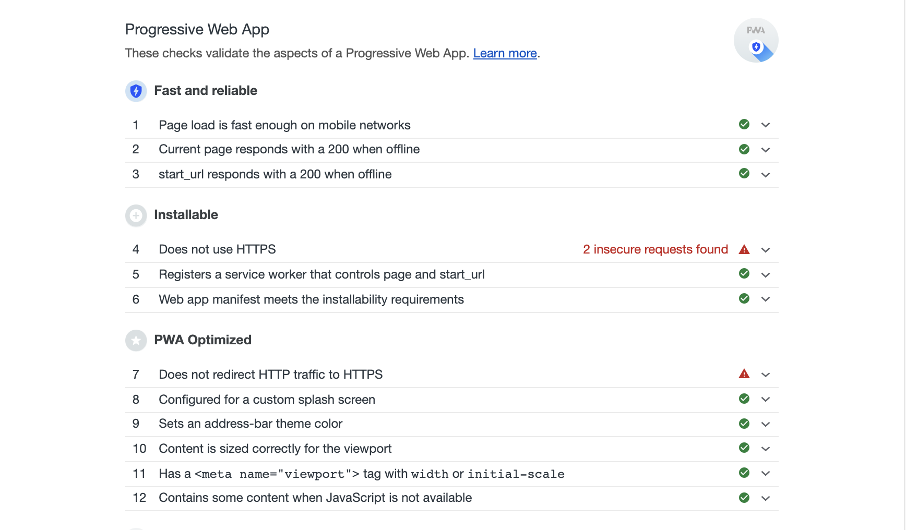

渐进式网络应用程序（英语：Progressive Web Apps，简称：PWA）是一种普通网页或网站架构起来的网络应用程序，但它可以以传统应用程序或原生移动应用程序形式展示给用户。这种应用程序形态视图将目前最为现代化的浏览器提供的功能与移动设备的体验优势相结合。———— 维基百科
PWA 诞生已久，被赋予了 Web 应用和原生应用的特性，具备渐进式、可搜索、可离线、可安装、可链接、安全等优势。PWA 不是一种技术，而是一系列关键技术构成了 PWA。如，Web APP Manifest，Service Worker，Push Notification等。（本文不讨论 Push Notification）
让一个传统的网页升级为 PWA ，是一件很容易的事。现以本博客为例，将其打造为 PWA。（本博客没过 https 这关， 😅😅😅）
步骤一：Web APP Manifest
Web APP Manifest ，在 JSON 文本中提供应用程序相关的信息。包括自定义名称，自定义图标设置启动网址等。manifest 的目的是将 Web 应用程序安装到设备的主屏幕。
1 | // manifest.json |
定义好 manifest.json 文件后，需要在 HTML 头部引入。
1 | <link rel="manifest" href="/manifest.json"> |
步骤二：Service Worker
Service Worker 是 PWA 的核心技术，充当着浏览器和网络之间的代理，或应用程序与浏览器之间的代理服务器。旨在统筹资源缓存和对自定义网络请求进行控制。Service Worker 运行在一个与JavaScript 主线程独立的线程上，并且没有对 DOM 结构的任何反问权限。并且可以在不同的上下文之间发送和接收信息，可分配给 Service Worker 任务，并在使用基于 Promise 的方法当任务完成时接收结果。
service worker 有自己的生命周期，我们要做的是在不同的状态下对资源采用不同的策略（缓存，不缓存，优先缓存，优先网络等）。

1 | // sw.js |
service worker 安装完成后，如果已存在旧版本正在使用，则不会激活，直到旧版本停用。如果旧版本的某些资源无需存在，可以在 activate 阶段将其删除。
1 | // sw.js |
既然是充当代理，拦截请求就很重要了。对请求的资源如何控制将会在这里处理。

1 | // sw.js |
service worker 要做的事情基本就这些（都写在 sw.js 里了），接下来就是注册 service worker。

1 | // app.js |
到此基本完成了一个可安装、可离线的 Web APP。还记得步骤一的可安装么？安装提示一般会按照一定的规则弹出的，如果我们希望主动引导用户安装呢？
首先把 beforeinstallprompt 里的事件保存起来，在一个恰当的时机触发。
1 | //app.js |
步骤三：检测你的 PWA
完成 PWA 的构建后，我们可以利用 Chrome 的开发者工具 Audits 工具检测，针对 PWA，会有相关的提示建议。

workbox
在 PWA 中， service worker 是关键，而缓存策略又是重中之重。对于请求的资源是否缓存，又以怎样的形式返回。如果关照到广度和粒度，估计会很麻烦。Google 为开发者量身打造了 workbox。常见的缓存策略：CacheFirst，CacheOnly，NetworkFirst，NetworkOnly，StaleWhileRevalidate。
StaleWhileRevalidate

Cache First (Cache Falling Back to Network)
Network Only
1 | // 官方示例（部分） |